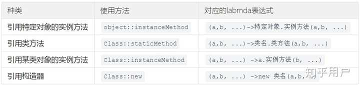
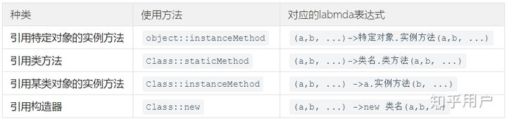

java 中的 :: 及 labmda表达式
转载自：
https://www.zhihu.com/question/302776698/answer/1522159326
Java8 推出了属于Java的lambda表达式，与一众的 => 不同，Java选择了 -> 做为箭头符号。有没有观众知道为什么这么选择。 lambda表达式的基本格式是这样的
1 | ( )->{ } |
具体是什么意思呢，这里就要提一下使用lambda表达式的前提了。
注：list、map、Object均可以调用forEach方法
labmda表达式一般用来实现一个函数式接口。
比如java.lang.Iterable 的 foreach(xxx)方法中的xxx位置需要一个 Consumer 接口类
1 | default void forEach(Consumer<? super T> action) { |
而 Consumer 正好是一个函数式接口，@FunctionalInterface 注解了解一下。
1 |
|
这时候可以这么用 Consumer one = (x) -> { System.out.println(x) } ，这句可以和上面结合起来看，x就是accept中的t，花括号里没有return是因为accept返回值是void。因为 Consumer 接口中只有一个方法，因此不会有冲突的可能。 然后再把 one 传进去forEach就可以了。
赋值后，也可以直接调用接口中的方法。相似的，我们也可以自己写一个函数式接口。
1 | interface Person{ |
可以直接把 lambda 表达式直接放在需要的位置。这时候 lambda 就可以自动变成所需类 （上面代码被注掉的部分）。
那么回到最开始也有两种用法
1 | //第一种 |
那么双冒号是什么意思？
lambda 表达式允许4种方式的双冒号


其中的 Class 指的是类名，产生于 class Class { }。object 是实例对象，产生于 Class object = new Class(); 一个一个的说。
1 | object::instanceMethod` 的一个典型用法就是 `System.out::println |
out继承于FilterOutputStream，可以看成System的一个成员对象，通过它可以调用printstream中的输出方法。 System.out是printStream的实例：\ 因为System类当中的out 数据成员是由printStream流创建出来的对象，在system类中为public static final printStream out 而且out又是static的，所以只能够通过system来调用,即为System.out了。System.out说是printStream的实例化对象，意思就是说System类当中的out数据成员即为printStream 类的对象了。System.out 整个就表示屏幕输出了，这时候还只是字节流而已，当调用pringStream的方法println()是就表示用什么用的方式打印输出的关系了。
在此请回看 Consumer 类的代码，就明白了为什么 Consumer one = System.out::println 是 Consumer one = t -> System.out.println(t) 的简写
在这里插一个多线程的lambda表达式使用技巧：
1 | public class SynchronizedTest { |